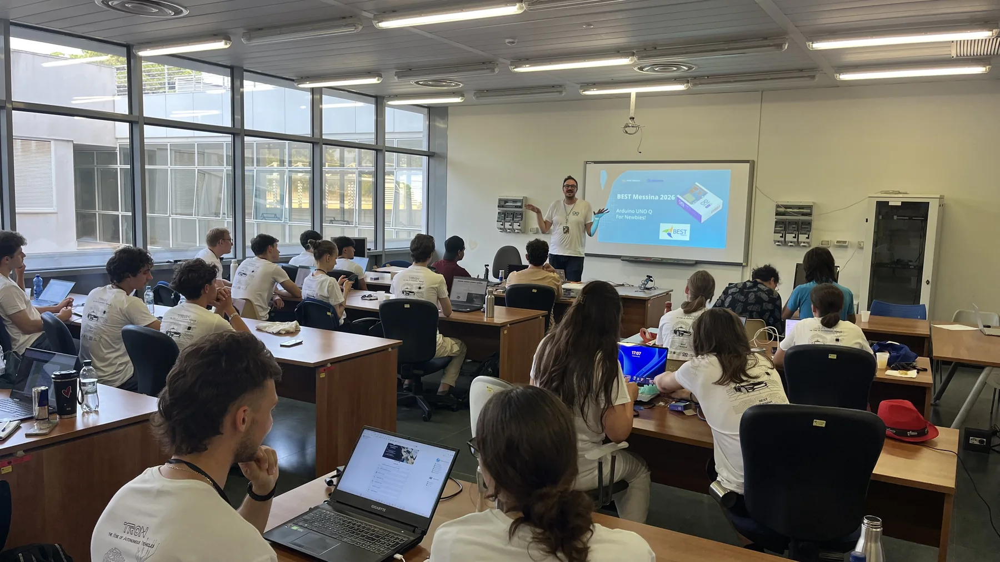
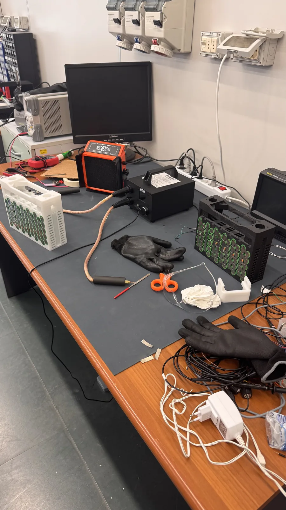
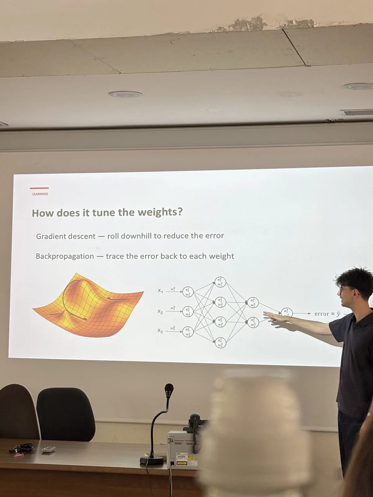
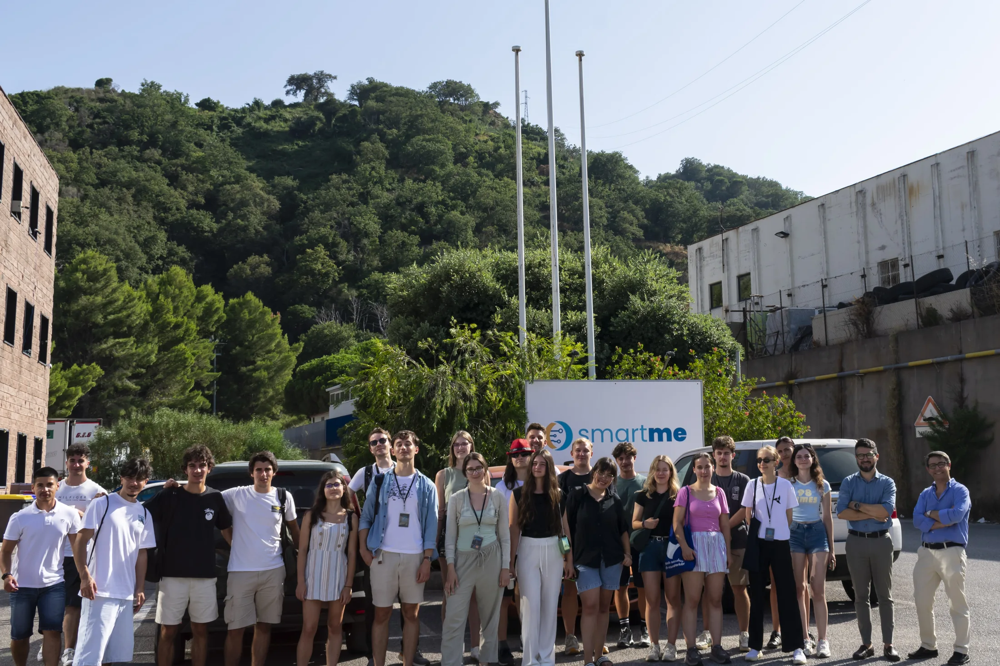
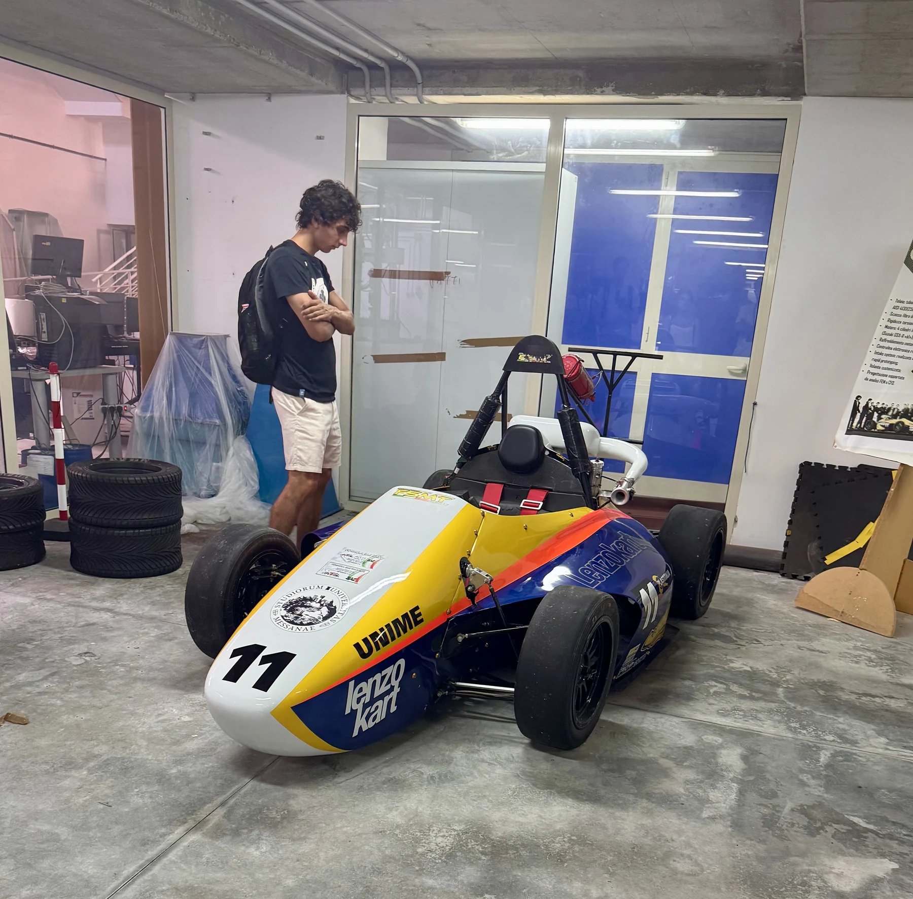
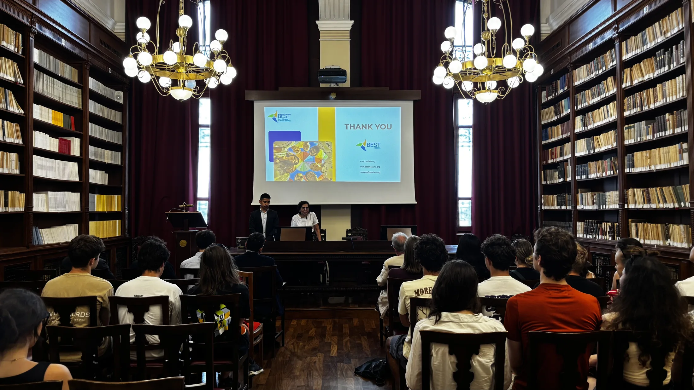

International course · Participation
Autonomous systems in Messina
A week connecting embedded systems, sensors and computer vision through practical workshops at the University of Messina.
- Context
- BEST · University of Messina, Italy
- Period
- One-week course
- My role
- Course participant
- Focus
- STM32 · Arduino · Computer vision · ROS 2 fundamentals

Learning across disciplines
I took part in “TRON: The Rise of Autonomous Vehicles”, a one-week BEST course at the University of Messina. It connected introductory teaching with small, practical exercises in embedded systems and computer vision.
The experience was an opportunity to explore the interface between programming, electronics, sensors and mechanical systems in an international group.
Building an understanding of autonomous systems
Sensors and embedded control
University lectures introduced Internet of Things principles, STM32 microcontrollers and Arduino Uno Q. In practical sessions we combined a sensor, LEDs and a beeper into a proximity detector, learning how a physical signal becomes a program response.


Computer vision and robotics
We labelled image examples, trained an object detector and tested recognition of a Red Bull can through a live camera feed. Lectures also introduced machine-learning concepts and ROS 2 fundamentals: nodes, topics and communication between components. These were introductory exercises, but they showed how sensors, software and control meet in an autonomous system.

Companies, teams and real applications
At SmartMe, we saw how connected devices and microcontrollers move toward commercial products. The visit linked our workshop exercises to product-development choices outside the classroom.

We also visited the University of Messina Formula Student team. Seeing its car, fabrication spaces and student engineering process was a highlight for me as a motorsport enthusiast.

The week closed with the wider BEST community, where technical learning and international friendships met.

What I brought back
I left with a clearer picture of how sensing, software and mechanical systems connect, and with new questions I want to explore in more depth. Learning alongside students from other countries also showed me the value of exchanging methods and perspectives in a team.